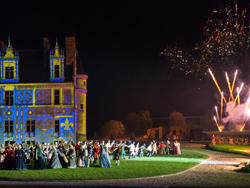
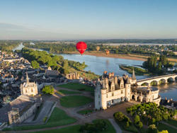

-

Les châteaux de la Loire
Venez les découvrir !
Les châteaux en ballon

Survolez mes châteaux de la Loire et vivez un moment unique! En direct du ciel, découvrez les bords de la Loire, les châteaux, les manoirs bordant le plus grand fleuve de France.
Formulaire inscription pdfLa Loire à vélo

800km de voies cyclables de long de la Loire Tel est le parcourt fabuleux de La Loire à vélo qui traverse l'une des plus belles régions de France. Musique:
Sons et lumières
Chaque été, les châteaux du Val de Loire revêtent leurs costumes de soirée. Des "sons et lumières" animent et illuminent les géants de pierre de la Renaissance.
Les parcs et jardins remarquables de Touraine

C'est à la Renaissance qu'est véritablement née l'importante tradition des parcs et jardins en Val de Loire, qui vaut à la Touraine d'être encore aujourd'hui surnommée "le jardin de la France".
La diversité des châteaux de la Loire
En l’an 2000, l’UNESCO choisissait de faire du Val de Loire un espace majeur du patrimoine de l’humanité en l’inscrivant, au titre des paysages culturels, aux côtés des plus grands sites du monde.